Chapter 37: Federated Learning and Privacy-Preserving Technologies¶
Abstract¶
The previous chapter built a compliance and governance baseline around shift-left compliance, Privacy by Design, RoPA, DPIA, and data classification. Yet for highly sensitive C3 data or cross-institutional data silos, policy statements such as “data is usable but not visible,” traditional access control, and field masking are often not enough to eliminate the physical risk of leakage. As machine learning systems, especially large-model systems, move deeper into core business processes, exposure no longer occurs only through database exports, report views, or manual queries. It also appears during feature construction, parameter training, joint modeling, and inference calls.
This chapter moves from institutional and process governance into technical governance during training, collaboration, and inference. It introduces federated learning (FL) and privacy-enhancing technologies (PETs). We do not only define these technologies. We focus on why they must enter architecture design early, and how they can be combined, verified, and governed in real engineering systems. The central question is practical: when data cannot flow freely, how should an organization redesign collaborative training?
We first explain why after-the-fact encryption and after-the-fact masking are often insufficient in machine learning and large-model settings, then examine the structural tension between data utility and privacy protection. We then build a technology landscape comparing FL, differential privacy (DP), secure multi-party computation (MPC), trusted execution environments (TEE), and homomorphic encryption (HE) by protection target, applicable phase, system cost, and combination boundary. On that basis, we discuss implementation questions: how to evaluate accuracy loss, communication overhead, and latency; how to design federated training components and control flow; how to distinguish horizontal FL, vertical FL, and federated fine-tuning; and how to validate privacy systems through membership inference, gradient inversion, model poisoning, and backdoor tests.
Finally, through medical and financial cases, and by connecting P09’s privacy-preserving pipeline, Ch27’s compliance governance framework, and Ch22’s multimodal retrieval capabilities, the chapter shows how privacy-preserving technologies form a closed loop across governance, training, validation, and audit. P09 focuses on the pre-training governance chain: classification, permission control, masking, isolation, audit, preflight checks, and postmortems. This chapter focuses on what happens after that chain is in place: how to keep privacy boundaries during cross-party training and model collaboration.
Keywords¶
Federated learning; privacy-enhancing technologies; differential privacy; secure multi-party computation; trusted execution environment; privacy validation
Learning Objectives¶
After studying this chapter, you should be able to:
- Explain why privacy protection cannot stop at policy governance and field masking, and must enter machine learning systems and model-training architecture.
- Understand the principles, protection targets, applicable phases, and main costs of FL, DP, MPC, TEE, and HE.
- Distinguish horizontal FL, vertical FL, and federated fine-tuning, and identify their assumptions about data distribution and collaboration.
- Understand major attack surfaces in federated learning, including membership inference, gradient inversion, model poisoning, and backdoor attacks.
- Make privacy-technology choices by balancing accuracy, latency, bandwidth, interpretability, and compliance pressure.
- Validate privacy-enhancing systems and explain why “a privacy technology is used” does not mean “privacy has been verified.”
- Understand how this chapter connects with the P09 privacy-preserving pipeline, the Ch27 compliance-governance system, and the Ch22 multimodal retrieval architecture.
Scenario Introduction¶
Two leading tertiary hospitals, Hospital A and Hospital B, plan to train a rare-disease multimodal diagnostic large model with a top AI research institute, Institution C. Hospital A has a large volume of high-value clinical-text records. Hospital B has corresponding medical images and genomic-sequencing data. All three parties believe the project has significant social value: a single hospital sees too few rare-disease cases, and without cross-institutional collaboration the model will struggle to generalize.
The project is stopped during the initial DPIA phase by both legal and security teams. The reasons are clear. First, the data is highly sensitive C3 medical data and must not leave hospital intranets. Second, even if hospitals remove direct identifiers such as names and identity numbers locally, Institution C may still align visual and textual entities in multimodal feature space and face membership inference or feature inversion attacks that recover patient identity. Third, no party wants to assume the institutional and technical risks of centralizing raw data.
Under the combined pressure of data silos and strong regulation, the old paradigm of collecting everything into a central data lake for training collapses. The team needs an architecture that can optimize models jointly without sharing raw data. This is the practical background for federated learning and privacy-enhancing technologies: when data no longer moves freely, collaboration must be reorganized through protocols, algorithms, and system boundaries.
Figure 37-1 illustrates the corresponding workflow or structure.
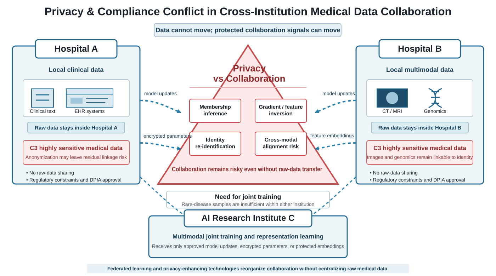
{kind=link}
37.1 Why Privacy Protection Must Enter Architecture Design Early¶
As emphasized in Ch27, compliance costs rise quickly across the project lifecycle, so compliance must shift left. Privacy protection follows the same rule at the technical layer. For AI systems, the later privacy is considered, the easier it is to leave irreversible structural defects in data onboarding, feature engineering, training workflows, and inference interfaces. Many teams focus on model effect and training throughput at the beginning and treat privacy as something to add after the model works. They often discover during acceptance, release, or compliance review that the architecture itself cannot satisfy regulatory requirements.
In traditional business systems, late issues can sometimes be mitigated by adding field permissions, logs, approvals, or masking. In machine learning systems, however, once risk enters training, it is hard to eliminate afterward. Models compress statistical patterns, long-tail sample characteristics, and sometimes individual outliers into parameter space. Data exposure is no longer simply a question of who exported a table; it becomes a question of whether the model has already learned something it should not remember (Shokri et al. 2017; Zhu et al. 2019; Geiping et al. 2020).
37.1.1 Why After-the-Fact Encryption and Masking Are Often Insufficient¶
Traditional security thinking emphasizes database encryption, transport encryption, and display masking. These measures matter, but they are not enough for machine learning and especially large-model systems.
The first issue is model memorization. Large deep models often memorize long-tail samples. If some training samples are highly sensitive, rare, and distinctive, the model may retain enough signal for attackers to recover privacy fragments through prompts, API probing, or targeted sampling of outputs.
The second issue is reversibility in high-dimensional features. Many teams assume that removing names, phone numbers, and identity numbers is sufficient. That only removes direct identifiers. Image embeddings, text vectors, multimodal alignment features, gradients, and intermediate representations may still allow attackers to reconstruct part of the original content. Surface-level field masking does not automatically imply model-level privacy safety (Zhu et al. 2019; Geiping et al. 2020).
The third issue is that training can be more dangerous than display. In many organizations, security still focuses on whether front-end pages show masks or exported tables remove phone numbers. The highest-risk points may actually be data loading, feature caching, sample joining, log printing, intermediate-result storage, and model-update synchronization during training. Leakage can happen before the model is ever displayed to users.
Privacy protection therefore cannot be a superficial shield after data enters the system. It must become part of the training and collaboration mechanism itself.
37.1.2 The Structural Tension Between Data Utility and Privacy¶
Privacy protection and data utility are not simple opposites. They form a persistent structural tension. Maximizing privacy by cutting off data connections, severely limiting queries, or injecting heavy noise into training and outputs can quickly damage recognition, regression, and business usability. Maximizing utility through unrestricted plaintext sharing and joint modeling may improve model effect, but it also expands compliance risk and accountability exposure.
Architecture design does not eliminate this tension. It finds the minimum necessary exposure surface for a specific scenario. This means minimizing visible data, exchangeable information, saved intermediate results, and exposed model capability while still meeting the business objective. PETs are therefore not optional decoration in many cross-party AI systems. They are the condition that makes collaboration possible at all.
Figure 37-2 illustrates the corresponding workflow or structure.
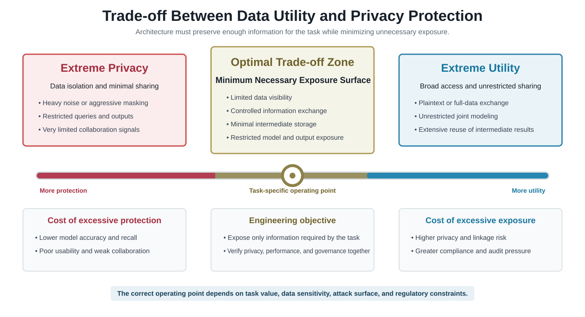
{kind=link}
37.1.3 Privacy Budget in Engineering Systems¶
Differential privacy provides a quantifiable engineering expression for this trade-off: the privacy budget. The budget is usually denoted by \(\epsilon\). It is not a financial budget, but an upper-bound measure of allowed leakage risk. Smaller \(\epsilon\) usually means stronger protection but greater utility loss. Larger \(\epsilon\) means less noise and better model usefulness, but higher leakage risk (Dwork 2011; Abadi et al. 2016).
In engineering systems, the privacy budget is not an abstract mathematical constant. It is a governance variable tied to training rounds, query counts, experiment frequency, and external service quotas. If a team can write epsilon in a paper but cannot record budget consumption for every training run, evaluation, and release, then it is not managing privacy risk in practice. Budget management itself is part of the privacy system (Erlingsson et al. 2014; McMahan et al. 2018).
37.1.4 From Data Security to Training Security¶
Traditional data governance asks who accessed the database, which fields were exported, and which reports were shared. In AI systems, the center of risk moves. Organizations must also ask how data is represented, how gradients are uploaded, how parameters are aggregated, how models are debugged, whether outputs can leak training samples, and whether attackers can infer individuals through model interaction.
The security target shifts from protecting databases to protecting training processes, collaboration boundaries, and model behavior. FL, DP, MPC, TEE, and HE all serve this shift. When data cannot move freely, systems must rebuild safety through training protocols, aggregation logic, and output boundaries (Kairouz and McMahan 2021; Bagdasaryan et al. 2020).
Figure 37-3 illustrates the corresponding workflow or structure.
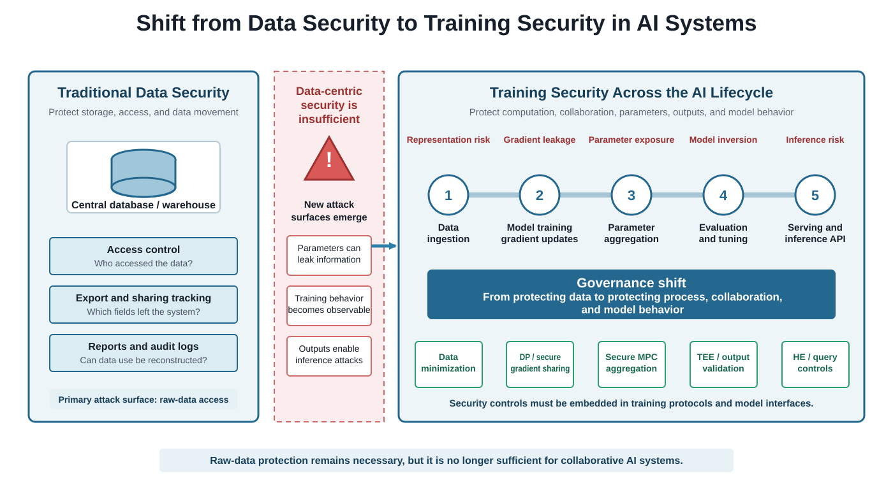
{kind=link}
37.2 Technology Landscape¶
The industry has evolved five main technical families for privacy-preserving computation. They are not mutually exclusive. They protect different objects, impose different costs, and fit different stages. The key is not memorizing definitions, but understanding what each technology protects, what it sacrifices, and where it belongs in a system (Yang et al. 2019; Kairouz and McMahan 2021).
Figure 37-4 illustrates the corresponding workflow or structure.
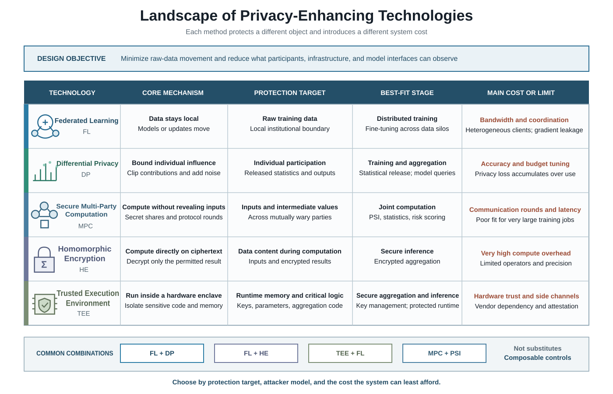
{kind=link}
37.2.1 Core Technologies and Comparison¶
Table 37-1 summarizes the corresponding comparison and engineering considerations.
Table 37-1: Core Technologies and Comparison
| Technology Family | Core Principle | Protection Target | Applicable Phase | Implementation Cost and Main Bottlenecks |
|---|---|---|---|---|
| Federated Learning (FL) | Data stays local while models move; nodes train locally and exchange gradients or parameters | Raw training data does not directly leave its domain | Model training and fine-tuning | High communication cost; gradient leakage risk; sensitive to node heterogeneity |
| Differential Privacy (DP) | Inject noise into data, gradients, or outputs to hide individual contribution | Whether an individual participates in training or query results | Training, statistical release, federated aggregation | Accuracy loss; complex budget management; difficult tuning |
| Secure Multi-Party Computation (MPC) | Use protocols such as secret sharing so multiple parties compute jointly without revealing inputs | Input data and intermediate results | Joint statistics, private set intersection, joint risk control | Many communication rounds, high latency; poorly suited to large-scale deep training |
| Homomorphic Encryption (HE) | Compute directly on ciphertext and decrypt to obtain the plaintext-equivalent result | Data content during computation | Secure inference and secure aggregation | Very high compute cost; limited supported operators |
| Trusted Execution Environment (TEE) | Run code and data inside a hardware-protected enclave | Runtime memory data and critical logic | Secure aggregation, sensitive inference, key management | Depends on hardware; side-channel risks; trust root sits with hardware vendors |
These technologies can be roughly divided into two groups. FL, MPC, and HE emphasize that data does not leave its domain or is not seen in plaintext. DP and TEE emphasize that even if observation occurs, individual identifiability or runtime visibility is reduced. This distinction explains why they are often combined rather than substituted for each other.
37.2.2 Technology Combinations and Scenario Selection¶
Real systems often need combinations.
The most typical combination is FL + DP. FL solves raw-data locality, while DP reduces the risk that uploaded updates or model outputs reveal individual information. This works well when multiple parties jointly train models and must control membership inference risk. A second combination is FL + HE: clients train locally and upload encrypted updates for central aggregation, reducing what the center can observe. A third is TEE + FL, where aggregation logic runs inside a trusted execution environment to reduce the chance that cloud hosts or host systems inspect intermediate results. For financial list matching and joint anti-fraud, MPC + PSI is common; its focus is secure set operations and joint statistics rather than large-model training (Bonawitz et al. 2017; Kairouz and McMahan 2021).
Selection should start with three questions. First, what is being protected: raw data, individual identity, runtime memory, or the computation result? Second, who is the attacker: the central platform, a partner institution, an external adversary, or a black-box model-query attacker? Third, what cost can the system least afford: accuracy loss, latency, bandwidth, or implementation complexity? Without these answers, technology selection becomes decorative.
37.2.3 Federated Learning in Depth¶
Federated learning is not merely “keeping data local.” It reorganizes training control. In centralized training, data is pulled into one environment and the trainer controls all samples. In federated training, participants’ data domains are separate, network conditions differ, resource capacities vary, and trust assumptions are limited. The model learns by synchronizing parameters or gradients across domains, not by synchronizing raw data (McMahan et al. 2017; Yang et al. 2019).
1. Basic Training Loop¶
A typical federated loop has several steps. The coordinator sends an initial or current global model. Each participant trains locally for several steps and generates parameter or gradient updates. Participants send updates to the aggregator. The aggregator performs averaging, weighted averaging, or a more robust aggregation strategy to produce a new global model, then sends it back for the next round.
This round-based flow resembles distributed training, but the assumptions differ. Distributed training assumes nodes are controlled by one organization and data can be treated as a global partition. Federated learning assumes independent parties, limited trust, and strong local data differences. It is not simply slower distributed training. It is a collaboration paradigm with business boundaries and governance constraints.
Figure 37-5 illustrates the corresponding workflow or structure.
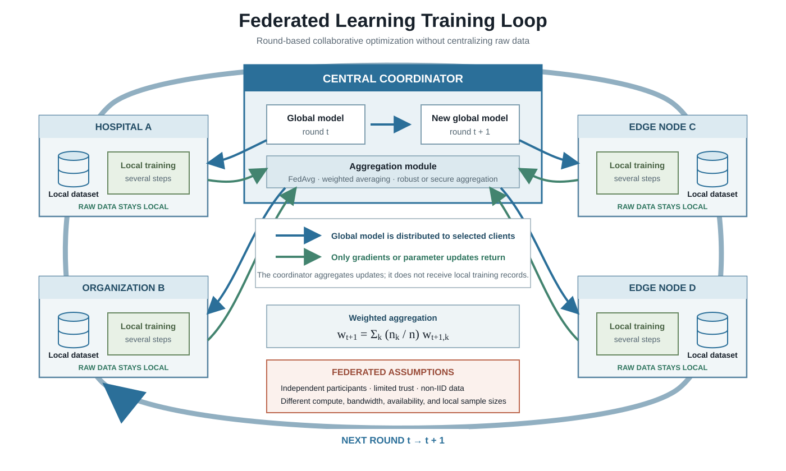
{kind=link}
2. FedAvg and Local Updates¶
The classic federated-learning algorithm is FedAvg. Each client trains locally for several steps and uploads model updates. The central side averages them, often weighted by sample count, to form a new global model. FedAvg is widely used because it is simple, easy to implement, and converges well in many medium-complexity scenarios (McMahan et al. 2017).
FedAvg also exposes a typical trade-off. Too few local steps create many communication rounds and high synchronization cost. Too many local steps make clients move further toward their own local distributions, causing client drift after aggregation. Engineering teams must tune local epochs, participation ratio, learning rate, and aggregation frequency together.
3. Non-IID Data¶
Federated nodes are usually not independent and identically distributed. Institutions differ in user structure, device sources, region, labeling conventions, and data scale. This can slow global convergence, allow large nodes to dominate, leave minority nodes with little benefit, or produce a model that is acceptable on average but poor for critical participants (Zhao et al. 2018; Li et al. 2020).
Non-IID data shows that federated training is not just data stored somewhere else. It is collaborative training under business heterogeneity. In health care, finance, and government, heterogeneity is often harder than the algorithm, because it comes from institutional reality rather than a technical variable that code can smooth away.
4. The Real Boundary of FL¶
FL promises that raw data does not leave its domain in principle. It does not promise absolute privacy. Uploaded gradients, parameter updates, training logs, and intermediate metrics can still leak information. FL is often the foundation of a privacy system, not the complete answer. As long as the system exchanges analyzable cross-domain information, it must also consider DP, secure aggregation, robust aggregation, and audit strategies (Bonawitz et al. 2017; Geiping et al. 2020).
37.2.4 Differential Privacy in Depth¶
Differential privacy does not make data completely invisible. Its goal is that the participation of one sample does not significantly change the output. Even if attackers have background knowledge, they should have difficulty determining whether a specific individual appears in the training data from model outputs, statistics, or visible training signals (Dwork 2011).
1. What DP Protects¶
DP protects the indistinguishability of individual contribution. It does not promise that business results are secret or that the system leaks nothing. Instead, it gives a probabilistic guarantee that output distributions are close whether an individual is present or absent. This is especially useful against membership inference, where attackers ask whether a person was part of the training set.
2. Local DP and Central DP¶
By deployment position, DP is often divided into Local DP and Central DP. Local DP adds noise on the user or client side before data leaves the local environment, so it has the weakest trust assumption but usually greater accuracy loss. Central DP adds noise on the central side, usually preserving model quality better, but it requires trust that the center correctly manages budgets and noise injection (Erlingsson et al. 2014; Abadi et al. 2016).
Both can appear in federated systems. If the organization does not trust the center enough, Local DP is more attractive. If the center can accept stronger governance responsibility, Central DP may provide better utility.
3. DP-SGD in Training¶
The common training approach is DP-SGD. First, per-sample gradients are clipped to limit the maximum influence of each sample. Then noise from a specified distribution is added to the aggregated gradient. Finally, budget consumption is accumulated and recorded during training. DP engineering is not “adding some noise.” It first bounds individual influence, then injects noise on that controlled boundary so risk measurement is interpretable (Abadi et al. 2016; McMahan et al. 2018).
Figure 37-6 illustrates the corresponding workflow or structure.
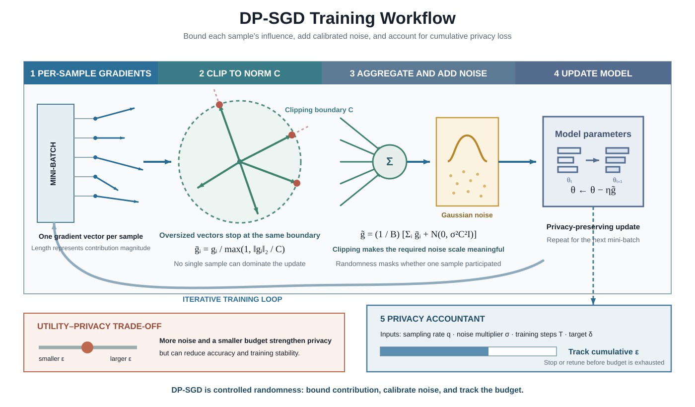
{kind=link}
4. Why DP Is Hard to Tune¶
The hard part of DP is not whether noise can be added. It is finding an acceptable region across utility, budget, and stability. Parameters that look elegant in theory may ruin a production model. Increasing epsilon to preserve metrics can remove meaningful protection. DP projects often stall not because the theory fails, but because the business cannot accept the accuracy loss.
37.2.5 Secure Multi-Party Computation in Depth¶
MPC fits scenarios where the computation is clear, the function is relatively fixed, and the number of parties is limited, such as private set intersection, joint statistics, and joint risk scoring. Its value is that parties can compute a permitted result without exposing raw inputs (Mohassel and Zhang 2017; Yang et al. 2019).
1. Intuition Behind Secret Sharing¶
The intuitive idea is to split raw data into unreadable shares and let those shares participate in joint computation. No single party’s share is enough to reconstruct the original data. Only the protocol interaction yields the intended output. This works well when the computation logic is fixed and all parties want strict control over input exposure.
2. What MPC Is and Is Not Good For¶
MPC is suitable for PSI, blacklist matching, joint statistics, and some rule-based joint modeling because the functions are clear and parties care most about computing results safely. It is not well suited to huge deep neural network training or high-frequency, low-latency, many-node online scenarios. The issue is not theoretical impossibility, but that communication rounds and compute overhead can destroy usability.
37.2.6 Homomorphic Encryption in Depth¶
HE is attractive because it supports computation on ciphertext. A system can perform certain operations without decryption and later decrypt to obtain the same result as plaintext computation. This gives strong privacy protection in theory because compute nodes do not see plaintext (Gilad-Bachrach et al. 2016).
1. Why HE Is Powerful¶
HE is especially useful when data must be processed in a not-fully-trusted environment without exposing plaintext, such as cross-cloud inference, encrypted aggregation statistics, or some secure inference tasks. When the computing party cannot be trusted but must compute, HE turns “do not trust the compute party” into “the compute party cannot see plaintext.”
2. Why HE Is Heavy¶
The cost is high. Ciphertext operations are much slower than plaintext operations, and nonlinear operators, complex control flow, and large matrix operations make implementation difficult. HE is often appropriate for specific links such as secure aggregation, limited inference, or critical encrypted submodules, not as a full replacement for complex deep-training pipelines.
37.2.7 Trusted Execution Environments in Depth¶
TEE means trusting a hardware enclave rather than the host environment. CPU or hardware platforms provide protected execution spaces where sensitive code and data run in isolation. Even host systems, administrators, or cloud operators with high privileges cannot easily view plaintext data or runtime state inside the enclave (Tramer and Boneh 2019).
1. The Value of TEE¶
TEE is useful for critical nodes, such as the aggregation service in federated training, key-management services, or highly sensitive inference tasks. When an organization cannot fully trust the cloud operator, container runtime, or host OS, TEE can harden the most critical centralized logic.
2. Risks and Limits of TEE¶
TEE is not a silver bullet. It depends on a hardware trust root, and hardware can have supply-chain issues, implementation defects, and side-channel vulnerabilities. Resource limits, debugging complexity, and platform compatibility costs also make implementation harder. Engineering teams more often use TEE to harden critical nodes than to force an entire system into enclaves.
37.3 Selection and System Cost Evaluation¶
Introducing PETs trades system performance, engineering complexity, and organizational coordination for stronger compliance passability and lower leakage risk. Architects must state these costs explicitly rather than presenting privacy as a free upgrade. In real projects, many privacy technologies fail not because the idea is wrong, but because no one told the business side how much compute, latency, bandwidth, debugging cost, and coordination cost would be required (Kairouz and McMahan 2021).
37.3.1 Accuracy Loss, Latency, and Communication Cost¶
Accuracy loss can come from DP noise, approximations forced by MPC/HE, non-IID federated data, or limited training rounds. For business teams, the practical question is not “what is the privacy budget?” but “how much will metrics drop?” Privacy engineering must therefore explain utility changes in business language.
Latency increase is also central. MPC and HE significantly increase computation latency. FL is affected by node waiting, network synchronization, slow-client stragglers, and retries. If an online inference system requires millisecond responses, many heavy privacy-computing solutions are not realistic.
Communication overhead can become the first bottleneck for large models or high-dimensional models. Federated parameter or gradient transfer is already large. Encryption can inflate payloads further. Many teams assume the algorithm is the bottleneck when the network fails first.
37.3.2 When to Use Policy Governance and When to Use Technical Governance¶
Not every project needs the strongest privacy-computing stack. Decisions should align with Ch27’s classification scheme. For L1/C1 low-sensitivity data, policy governance with RBAC, ordinary masking, audit logs, and approval flows is usually enough. For L2/C2 medium-sensitivity data, isolation environments, partial field limits, purpose constraints, and lightweight federated analysis may be enough. When a project involves L3/C3 high-sensitivity data, cross-party collaboration, cross-border scenarios, or external joint training, “data does not leave the domain” must become a physical system boundary, and FL, MPC, HE, or TEE become necessary.
This logic is consistent with P09. P09 uses classification, permission, masking, isolation, audit, and incident handling to form a pre-governance loop so sensitive data is controlled before entering training or analysis. Ch37 does not replace P09; it extends governance into the training stage.
37.3.3 Communication Optimization¶
Communication optimization determines whether FL can be deployed. A solution that uploads huge update vectors every round, waits for all nodes, and resynchronizes constantly will quickly become unusable.
Common strategies include gradient compression, such as uploading top-k important gradients, using low-bit quantization, or sparsifying updates. The goal is not mathematical perfection but large transfer reduction within acceptable accuracy loss. A second strategy is reducing synchronization frequency. More local training steps reduce global rounds by spending more local compute, but they also increase client drift and need stronger aggregation. A third strategy is asynchronous FL, which allows nodes to participate at different speeds and reduces straggler impact, at the cost of more complex consistency and convergence analysis.
Figure 37-7 illustrates the corresponding workflow or structure.
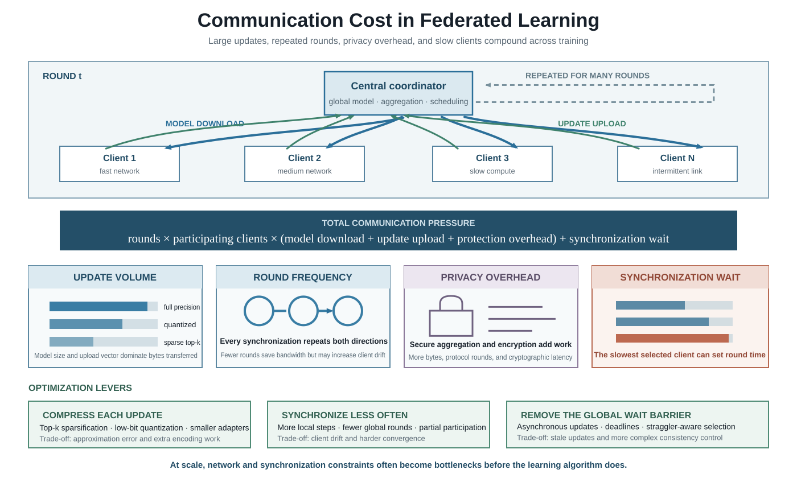
{kind=link}
37.3.4 Accuracy Optimization¶
After DP or other privacy constraints are introduced, teams often need active accuracy compensation. A simple and often effective approach is to start from a stronger pretrained base model and run lighter downstream optimization under privacy constraints. Stronger base models are more likely to keep acceptable performance with limited budget and limited data.
Another strategy is to handle sample and client differences more finely, for example grouping by institution, population, or task type before aggregating at a higher level. In DP settings, clipping thresholds, noise levels, training rounds, and optimizers must be tuned systematically. Privacy tuning is harder than ordinary model tuning because teams must observe not only loss and validation metrics, but also budget consumption and attack-validation results.
37.3.5 System Complexity and Operations Cost¶
Privacy technologies add more than compute cost. They also add key-management complexity, failure recovery difficulty, debugging opacity, log-compliance requirements, and coordination across legal, security, algorithm, and platform teams. Many privacy projects fail because operations cannot debug them. If an aggregator runs inside TEE, intermediate state is hard to inspect. If HE is used, developers cannot debug numeric programs in the ordinary way. If DP is used and the model degrades, it may be unclear whether the budget is too small, clipping too aggressive, or samples too few.
Evaluation must therefore count organizational maintainability, not only CPU and GPU. The deployable solution is often not the most advanced one; it is the one that balances safety, accuracy, cost, and operations.
37.4 Implementation Modes, Validation, and Release Governance¶
37.4.1 Horizontal FL¶
Horizontal FL applies when participants have largely the same feature space but different user populations. Two regional banks may have similar customer fields but serve different regions. Two city hospitals may have similar medical-record structures but non-overlapping patients. The columns are similar and the rows differ, so collaboration focuses on increasing sample coverage (Yang et al. 2019).
Its advantage is that the structure is intuitive and comparatively easy to deploy. It does not guarantee good model quality, because user composition, label proportions, and behavior patterns can still differ significantly across institutions.
37.4.2 Vertical FL¶
Vertical FL applies when participants share similar users but hold different feature dimensions. A bank may hold financial features while an e-commerce platform holds consumption-preference features, and both want a joint risk-control model without directly exchanging raw fields. The key is not sample volume, but feature complementarity across parties (Yang et al. 2019).
Vertical FL is usually harder to engineer than horizontal FL. It involves not only model collaboration but also sample alignment, identifier matching, and feature interaction. Strong privacy constraints increase complexity further.
Figure 37-8 illustrates the corresponding workflow or structure.
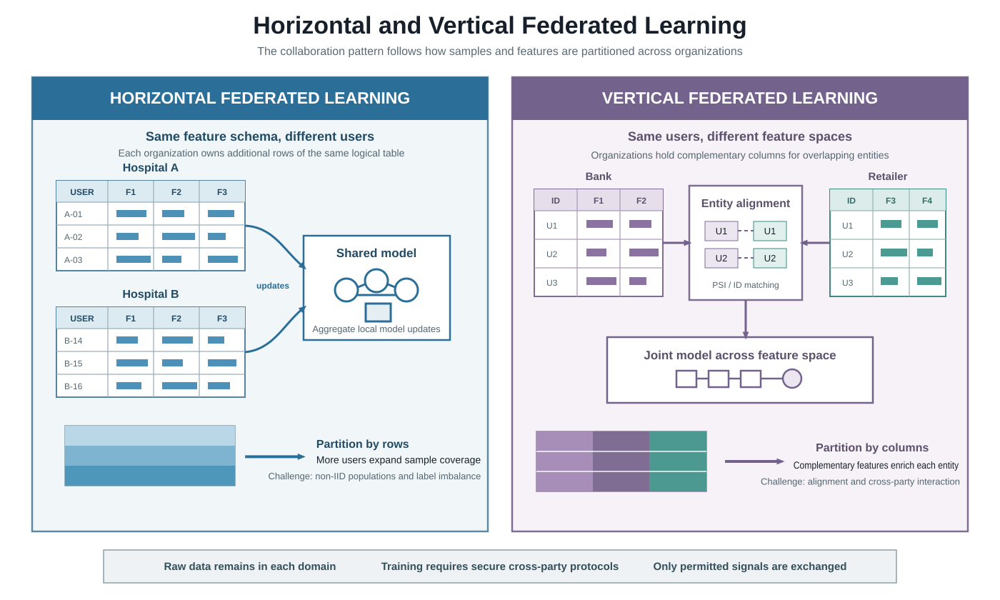
{kind=link}
37.4.3 Federated Fine-Tuning¶
For large models, more systems use federated fine-tuning rather than full-parameter federated training. The reason is practical: full-parameter training is communication-heavy, costly, and exposes a larger privacy surface. Federated fine-tuning often combines parameter-efficient fine-tuning (PEFT) methods such as Low-Rank Adaptation (LoRA), Adapter, and Prefix Tuning, exchanging smaller adapter parameters across institutions rather than all base-model weights (Hu et al. 2022; Kuang et al. 2024).
This brings two benefits. First, communication cost falls sharply, making multi-institution deployment more realistic. Second, local institutions keep more control over the base model and private corpus while sharing fewer parameter updates. Federated fine-tuning is likely to become a mainstream pattern for cross-institutional large-model collaboration.
37.4.4 Secure Aggregation¶
Federated training must answer one question: can the aggregator see each client’s individual update? If yes, FL prevents raw data from leaving the domain but still exposes gradient leakage risk to the center. Secure aggregation ensures that the center only sees the aggregated result, not each client’s raw update (Bonawitz et al. 2017).
This matters because many people conflate FL with secure aggregation. FL is a way to organize training. Secure aggregation is a crucial security module, but it is not automatic. A federated system without secure aggregation often retains an obvious central observation surface.
37.4.5 Release Governance and Gray Strategy¶
Privacy-enhancing systems need gray release, rollback, and abnormal-stop mechanisms. They are not silent background capabilities. They affect model effect, system latency, and participant collaboration, so rollout must be cautious. Before release, federated or privacy-enhancing systems should define small-scope institutional gray release, budget thresholds, parameter-update frequency limits, data-domain change approvals, abnormal-training stop conditions, and participant exit mechanisms.
These requirements look cumbersome, but they make privacy risk part of system change management. In heavily regulated industries, the dangerous part is not the technology itself. It is not knowing when to stop it, who can change it, or how to trace problems after deployment.
37.5 Attacks and Defenses in Federated Learning¶
A mature privacy chapter must cover attack surfaces, not only solutions. Otherwise readers may assume that data staying local is enough. Federated environments have no fewer attack surfaces than centralized training; the paths are different. Attackers do not need the original database if they can observe gradients, participate in training, manipulate updates, or analyze model outputs (Shokri et al. 2017; Bagdasaryan et al. 2020; Geiping et al. 2020).
37.5.1 Membership Inference¶
Membership inference tries to determine whether a sample appeared in the training set. In medical and financial contexts, this fact alone can be a serious privacy leak. If an attacker can determine whether a patient appeared in a rare-disease training set, serious ethical and legal harm may occur even without full medical details.
FL does not automatically remove this risk. The global model may still show higher confidence, more stable predictions, or special output behavior for training samples. Attackers can exploit these differences to infer participation (Shokri et al. 2017).
37.5.2 Gradient Inversion¶
Gradient inversion exposes a core FL risk: even if raw data never leaves the domain, uploaded gradients or parameter updates may contain enough information to reconstruct original samples or approximate features. In image tasks, attackers may reconstruct sample outlines. In text tasks, they may recover keywords, sentence patterns, or sensitive fragments (Zhu et al. 2019; Geiping et al. 2020).
This attack breaks a common misconception: data not uploaded does not mean information not uploaded. If uploaded content preserves analyzable structure, the attack surface remains.
Figure 37-9 illustrates the corresponding workflow or structure.
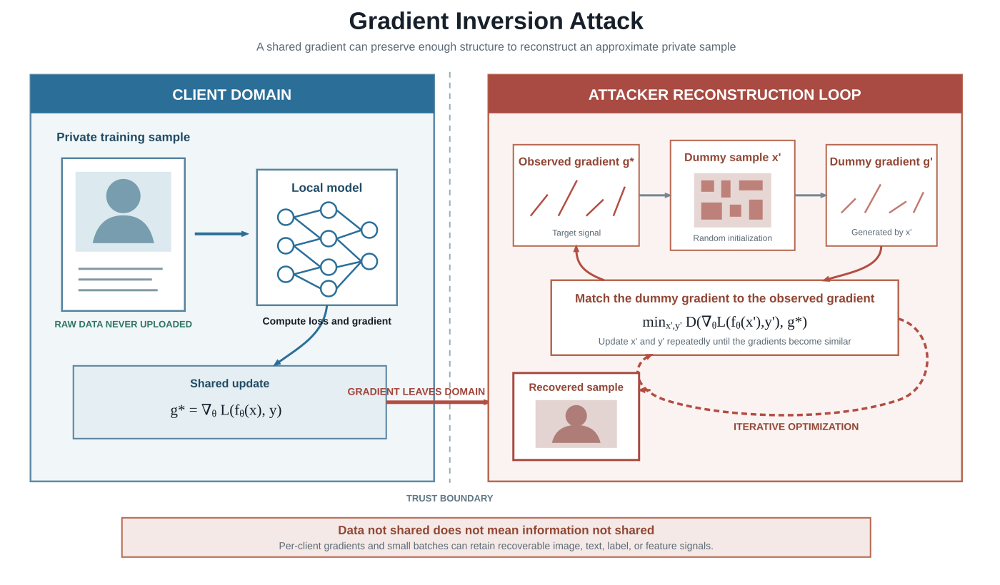
{kind=link}
37.5.3 Model Poisoning and Backdoor Attacks¶
In federated environments, attackers may not steal data. They can upload manipulated model updates from malicious clients and corrupt the global model. If the goal is to degrade overall performance, the attack is model poisoning. If the goal is to produce wrong output under specific triggers, it is a backdoor attack (Bagdasaryan et al. 2020).
This is especially important because FL encourages multiple parties to participate, and the center cannot fully know whether every client behaves normally. In medical diagnosis, financial approval, and public-service systems, distorting decisions can be a major security incident even if no raw data is stolen.
37.5.4 Defense Mechanisms¶
Federated defenses operate at three levels. First are privacy defenses such as DP, gradient clipping, and secure aggregation, which reduce analyzability of individual samples and client updates. Second is robust aggregation, such as Median, Trimmed Mean, and Krum, which reduce malicious-client influence. Third is anomaly detection, which monitors update magnitude, update direction, loss changes, and distribution anomalies (Abadi et al. 2016; Bonawitz et al. 2017; Blanchard et al. 2017).
These are not substitutes. DP focuses on inference and reconstruction risk. Robust aggregation focuses on poisoning. Anomaly detection focuses on runtime discovery. A trustworthy federated system usually combines all three.
37.5.5 Why Attack-Defense Validation Must Be a Release Standard¶
If a system has not run membership inference tests, inversion tests, and poisoning-robustness tests, the fact that it uses privacy technology does not prove that risk is controlled. Real compliance implementation is not naming technologies; it is verifying that attackable surfaces actually shrink. Privacy protection must be proven through attack-defense experiments and pre-release results, not only design documents.
Many organizations miss this point. They spend time explaining which technologies they used, but rarely answer how they know the technologies work under their data, model, and attacker assumptions. Release governance should make this validation a gate rather than a post-incident supplement.
37.6 Federated System Architecture Design¶
At this point, the chapter must move from concepts to system engineering. Whether a technology works depends on component boundaries, control flow, version and budget recording, failure handling, and collaboration changes. Federated learning is not one algorithm function. It is a distributed collaboration system (Kairouz and McMahan 2021; Kuang et al. 2024).
37.6.1 Core Components¶
A complete federated training system usually has five component groups.
The Coordinator / Orchestrator handles training-round scheduling, participant registration, task orchestration, and model-version control. The Client Runtime runs inside each institution and handles data loading, local training, policy execution, and local logs. The Aggregator collects uploaded updates and produces the global model. The Privacy Engine performs gradient clipping, noise injection, budget recording, secure aggregation, and key-related operations. The Audit & Governance Layer handles logs, approvals, audit traces, and abnormal alerts.
A mature system does not pile these capabilities into one service. It separates training orchestration, privacy control, and audit governance because privacy policy and model strategy may be maintained by different teams. Without clear boundaries, common failures appear: the model updates but privacy parameters do not, or the budget is exhausted but training continues.
Figure 37-10 illustrates the corresponding workflow or structure.
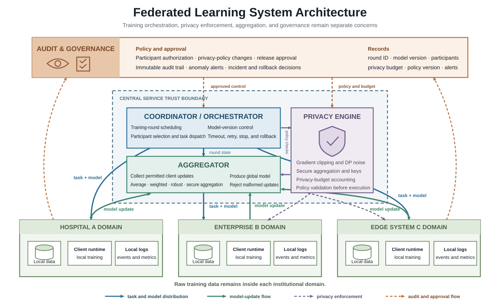
{kind=link}
37.6.2 Data Flow and Control Flow¶
A critical design point is distinguishing data flow from control flow. Data flow describes how raw data, local samples, intermediate features, gradients, or parameter updates move. Control flow describes who issues training tasks, who decides participation rounds, who approves policy changes, who records budget consumption, and who may terminate training.
Many architecture problems are not algorithmic. They arise because these flows are mixed, causing permission design and risk responsibility to blur. A central service may not touch raw data, but if it can force any training task, change privacy parameters, and bypass audit, it still has excessive control-flow power. In regulated settings, this is high-risk architecture.
37.6.3 Model Version, Budget Version, and Audit Version¶
Traditional model platforms often record only model version and release time. That is not enough for federated and privacy-enhancing systems. The system should also record which privacy budget was used by each model version, which institutions participated in each training round, which clipping threshold, noise strategy, or secure-aggregation method each aggregation used, and which alerts relate to that model version.
Version control in federated systems is therefore not just saving a weight file. It must trace the whole training-governance process. When a model has a problem, a partner raises concerns, or auditors ask questions, the organization must explain how the model was formed, which boundaries it trained within, and why it was allowed to launch.
37.6.4 Failure, Retry, and Participant Exit¶
Federated systems naturally face unstable participants, network interruptions, uneven node performance, and mid-training withdrawal. Systems must design strategies for client dropout, whether to aggregate after partial participant failure, training-round rollback, and temporary or permanent partner exit.
This is not only a distributed-systems problem. A client may drop out because of network failure, but also because an institution changes policy, pauses approval, or triggers risk control. Federated fault tolerance is also organizational collaboration management.
37.7 Connection with the P09 Privacy-Preserving Pipeline¶
P09 is not mainly about federated training. It builds a privacy-preserving data pipeline through classification, permissions, masking, isolation, audit, preflight checks, and postmortems. Its goal is not one-time masking, but a processing system that can explain responsibility boundaries and control sensitive data before it enters training or analysis.
37.7.1 P09 Solves Governance Before Training¶
In P09, the system first generates compliance scope, classification policy, access policy, and privacy-technology options. It then classifies raw records, masks data, quarantines risky records, emits alerts, writes audit traces, and uses preflight and postmortem artifacts to close the loop. P09 answers: which data may enter later systems, which must be isolated, which fields must be removed, which access should be audited, and which anomalies require review.
This work is not federated learning, but it is required before federated learning. If classification and boundary controls are wrong, any later federated training may run on the wrong data boundary.
37.7.2 FL Solves Cross-Party Joint Training¶
Even after P09 cleans and controls data, centralized aggregation may still be inappropriate. FL and PETs answer a different question: how can modeling continue when raw data cannot be centrally shared? P09 ensures governance quality before data enters model systems. Ch37 discusses how cross-party collaboration preserves privacy boundaries after data remains in each local domain.
37.7.3 How the Two Form a Closed Loop¶
Across the book, the loop is clear. Ch27 provides the institutional compliance framework and classification standards. P09 handles classification, masking, permissions, isolation, audit, and preflight before data enters model systems. Ch37 protects training and collaboration. Ch22 carries multimodal retrieval and application capabilities. Together they form a path from data governance to model governance to application governance.
Figure 37-11 illustrates the corresponding workflow or structure.
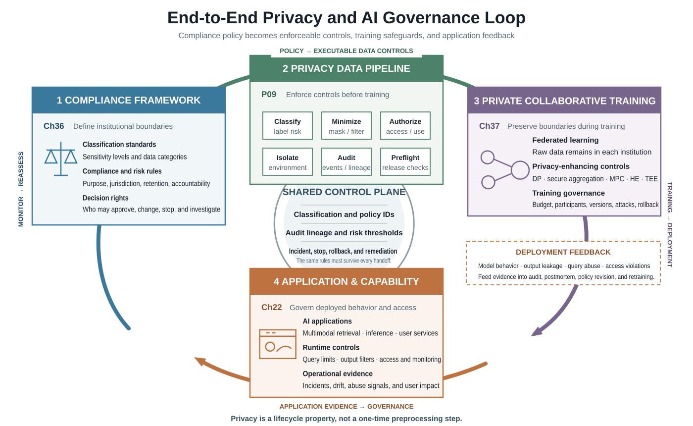
{kind=link}
37.7.4 Why This Connection Matters¶
Many projects fail because pre-governance is done by one team and the training system by another, without shared strategy. Classification and isolation may be completed upstream while downstream training reintroduces risk through caching, debugging, parameter synchronization, or output logs. P09 and federated systems should not be isolated modules. They should share classification levels, audit policy, risk thresholds, and incident handling logic. Only then is privacy a consistent lifecycle boundary rather than a safe-looking segment.
37.8 Industry Cases¶
37.8.1 Health Care: Cross-Hospital Multimodal Rare-Disease Model¶
The medical case at the beginning of the chapter shows why one technology is often insufficient. The data is C3 high sensitivity and cannot move freely. Text, imaging, and genomic data form a high-risk multimodal combination, and masking individual modalities does not eliminate re-identification after alignment. Participants span institutions and do not fully trust each other, and no party wants to assume responsibility for a centralized data lake. Research on medical FL has shown the feasibility and value of multi-institution collaboration without sharing raw patient data (Sheller et al. 2020).
A reasonable route is a combination: pre-governance handles P09 classification, access control, and direct PII removal; training uses federated fine-tuning to avoid centralized raw-data sharing; uploaded updates are protected with DP to reduce membership inference; the central aggregation node may use secure aggregation or TEE; and release requires membership inference and inversion tests.
The key is not whether data can technically be centralized. The governance boundary does not allow it. PETs therefore do more than make the system safer. They make otherwise impossible collaborative training possible.
37.8.2 Finance: Joint Anti-Fraud and Blacklist Matching¶
Financial scenarios differ from medical ones. The goal is often joint risk control, blacklist intersection, anomaly identification, and rule enhancement rather than multimodal generation or complex representation learning. Two institutions may each hold suspicious-account information, but cannot directly exchange complete lists because doing so would cross privacy, commercial, and compliance boundaries.
If the task is set intersection or intersection statistics, MPC/PSI is usually the first choice. If the task is joint risk-model training, FL may be appropriate. If query results can still leak privacy, stricter result audit and query limits can be added. Compared with health care, finance emphasizes rule precision, low false positives, and explainability, so its route often leans toward secure computation plus audit traceability rather than maximum model performance.
Figure 37-12 illustrates the corresponding workflow or structure.
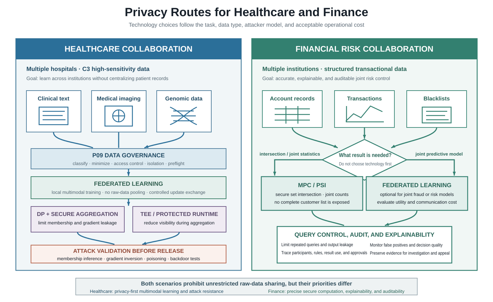
{kind=link}
37.9 From Training to Inference: A Full-Lifecycle View¶
Privacy is not only a training-stage problem. Training, deployment, query, and accountability can all create leakage surfaces. Training risks include data onboarding, gradient upload, aggregation, parameter storage, and debugging logs. Inference risks include prompt-induced leakage, overfitted output exposure, repeated queries that accumulate inference signals, and API responses that reveal training traces. Audit and accountability require the organization to explain which boundaries the model trained within, which budgets were consumed, and which update introduced a problem.
Privacy protection is therefore not a temporary layer around training. It is a lifecycle attribute. Only when organizations treat privacy as a full-chain property rather than a module add-on can they build stable, reusable, and auditable systems.
37.10 Practice Guide: When to Use PETs and When Not To¶
Do not over-engineer low-sensitivity, single-party, low-risk data. If the data is not sensitive and stays inside a controlled environment within one organization, introducing FL or MPC may only add complexity without real benefit.
Do not treat FL as inherently secure. FL solves data-location problems. It does not automatically solve gradient leakage, membership inference, model poisoning, or backdoor risk.
Select technology by collaboration boundary before algorithm preference. Ask first: can raw data leave its domain, is the center trusted, do participants trust each other, what is the online latency requirement, must membership inference be prevented, and is audit explainability required?
A useful rule of thumb is this: if a project does not involve sensitive data or cross-party collaboration but still reaches for the most complex privacy-computing stack, the architecture is probably over-designed. If a medical, financial, cross-border, or government collaboration still tries to pass with only field masking and access control, the architecture is underestimating real risk.
37.11 Chapter Summary¶
This chapter started from why privacy protection must enter architecture design early, then introduced FL, DP, MPC, HE, and TEE. We compared their protection targets, computation costs, and applicable scenarios. FL is not a simple slogan that data does not leave the domain; it is a system design about training control, parameter movement, and collaboration boundaries. DP provides a quantitative framework for individual protection. MPC suits joint statistics and set intersection. HE enables strong ciphertext computation in theory. TEE creates a runtime trust boundary around critical nodes.
More importantly, the chapter moved privacy from technology vocabulary into engineering governance. We discussed non-IID data, communication overhead, accuracy loss, privacy budget, attacks and defenses, system architecture, version tracking, and release governance. The hard part of PETs is not finding an algorithm, but embedding it into the model lifecycle.
Combined with P09 and the medical and financial cases, a mature AI privacy governance system is not a single technical breakthrough. It is a combination of institutional governance, data governance, training governance, validation governance, and audit governance. A deployable system must answer four questions at the same time: how data enters, how the model trains, how risk is validated, and how responsibility is traced.
References¶
Shokri R, Stronati M, Song C, Shmatikov V (2017) Membership Inference Attacks against Machine Learning Models. In 2017 IEEE Symposium on Security and Privacy (SP), pp 3-18.
Zhu L, Liu Z, Han S (2019) Deep Leakage from Gradients. Advances in Neural Information Processing Systems, 32. arXiv:1906.08935.
Geiping J, Bauermeister H, Droge H, Moeller M (2020) Inverting Gradients: How Easy Is It to Break Privacy in Federated Learning? Advances in Neural Information Processing Systems, 33, 16937-16947.
Dwork C (2011) Differential Privacy. In Encyclopedia of Cryptography and Security, Springer US, pp 338-340.
Abadi M, Chu A, Goodfellow I, McMahan H B, Mironov I, Talwar K, Zhang L (2016) Deep Learning with Differential Privacy. In Proceedings of the 2016 ACM SIGSAC Conference on Computer and Communications Security, pp 308-318.
Erlingsson U, Pihur V, Korolova A (2014) RAPPOR: Randomized Aggregatable Privacy-Preserving Ordinal Response. In Proceedings of the 2014 ACM SIGSAC Conference on Computer and Communications Security, pp 1054-1067. arXiv:1407.6981.
McMahan H B, Ramage D, Talwar K, Zhang L (2018) Learning Differentially Private Recurrent Language Models. International Conference on Learning Representations. arXiv:1710.06963.
Kairouz P, McMahan H B (2021) Advances and Open Problems in Federated Learning. Foundations and Trends in Machine Learning, 14(1-2), 1-210. https://doi.org/10.1561/2200000083.
Bagdasaryan E, Veit A, Hua Y, Estrin D, Shmatikov V (2020) How To Backdoor Federated Learning. In Proceedings of the Twenty Third International Conference on Artificial Intelligence and Statistics, pp 2938-2948.
Yang Q, Liu Y, Chen T, Tong Y (2019) Federated Machine Learning: Concept and Applications. ACM Transactions on Intelligent Systems and Technology, 10(2), 1-19.
Bonawitz K, Ivanov V, Kreuter B, Marcedone A, McMahan H B, Patel S, Ramage D, Segal A, Seth K (2017) Practical Secure Aggregation for Privacy-Preserving Machine Learning. In Proceedings of the 2017 ACM SIGSAC Conference on Computer and Communications Security, pp 1175-1191. https://doi.org/10.1145/3133956.3133982.
McMahan B, Moore E, Ramage D, Hampson S, y Arcas B A (2017) Communication-Efficient Learning of Deep Networks from Decentralized Data. In Artificial Intelligence and Statistics, pp 1273-1282.
Zhao Y, Li M, Lai L, Suda N, Civin D, Chandra V (2018) Federated Learning with Non-IID Data. arXiv preprint arXiv:1806.00582.
Li T, Sahu A K, Zaheer M, Sanjabi M, Talwalkar A, Smith V (2020) Federated Optimization in Heterogeneous Networks. Proceedings of Machine Learning and Systems, 2, 429-450.
Mohassel P, Zhang Y (2017) SecureML: A System for Scalable Privacy-Preserving Machine Learning. In 2017 IEEE Symposium on Security and Privacy (SP), pp 19-38. https://doi.org/10.1109/sp.2017.12.
Gilad-Bachrach R, Dowlin N, Laine K, Lauter K, Naehrig M, Wernsing J (2016) CryptoNets: Applying Neural Networks to Encrypted Data with High Throughput and Accuracy. In International Conference on Machine Learning, pp 201-210.
Tramer F, Boneh D (2019) Slalom: Fast, Verifiable and Private Execution of Neural Networks in Trusted Hardware. International Conference on Learning Representations.
Hu E J, Shen Y, Wallis P, Allen-Zhu Z, Li Y, Wang S, Wang L, Chen W, others (2022) LoRA: Low-Rank Adaptation of Large Language Models. International Conference on Learning Representations. arXiv:2106.09685.
Kuang W, Qian B, Li Z, Chen D, Gao D, Pan X, Xie Y, Li Y, Ding B, Zhou J (2024) FederatedScope-LLM: A Comprehensive Package for Fine-Tuning Large Language Models in Federated Learning. In Proceedings of the 30th ACM SIGKDD Conference on Knowledge Discovery and Data Mining, pp 5260-5271. https://doi.org/10.1145/3637528.3671573.
Blanchard P, El Mhamdi E M, Guerraoui R, Stainer J (2017) Machine Learning with Adversaries: Byzantine Tolerant Gradient Descent. Advances in Neural Information Processing Systems, 30.
Sheller M J, Edwards B, Reina G A, others (2020) Federated Learning in Medicine: Facilitating Multi-Institutional Collaborations without Sharing Patient Data. Scientific Reports, 10(1), 12598. https://doi.org/10.1038/s41598-020-69250-1.